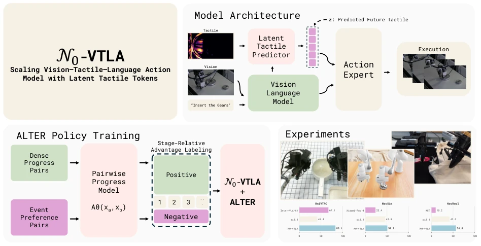
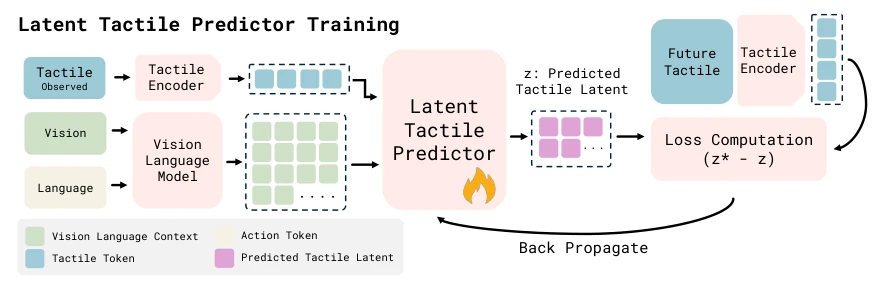
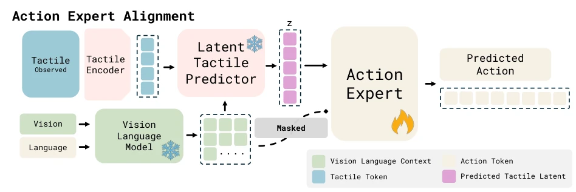
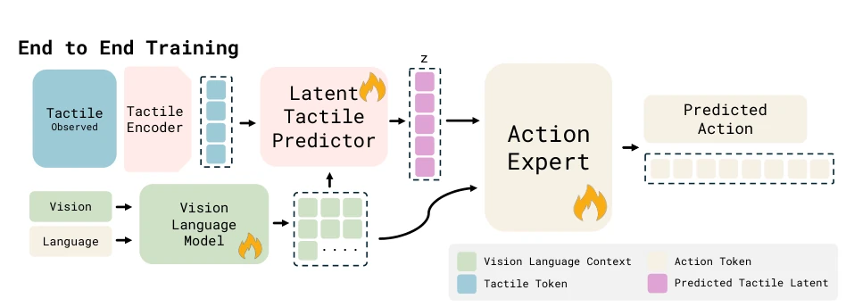
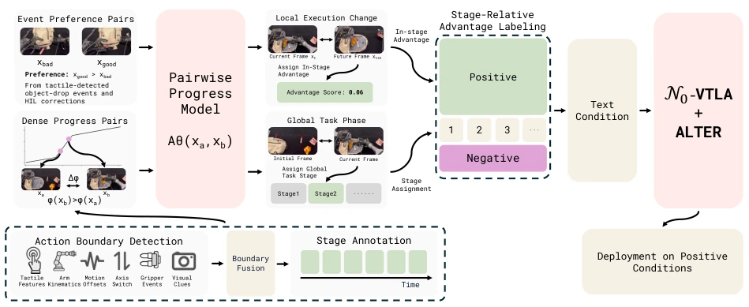
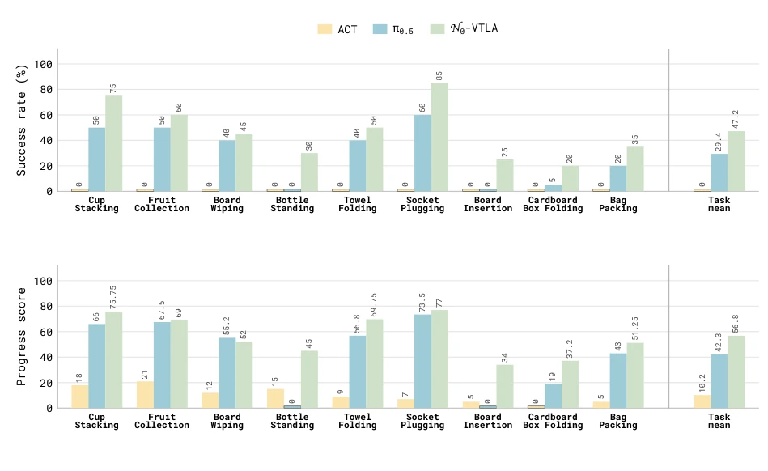
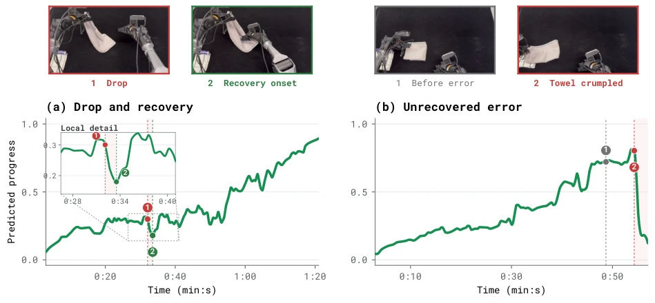
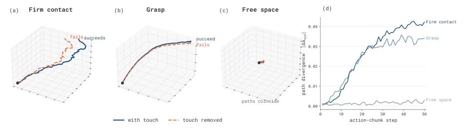
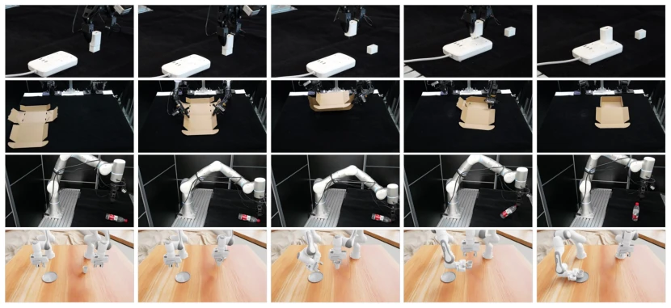
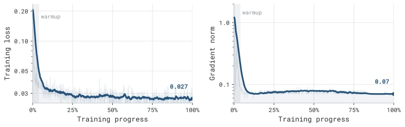

N0-VTLA attempts to equip VLA models that only "see" with "skin"; this move is quite correct, after all, a robot that cannot touch things is like blind men touching an elephant. The paper's biggest highlight is proposing the concept of "predictive tactile" rather than "reactive tactile", turning tactile from a passive background into an active prediction target, which is much more sophisticated than simply concatenating tactile maps into visual contexts. However, the authors boast this is the "first large-scale tactile pre-training", but actually the scale and quality of the NeoData dataset are key; if the data itself contains noise, no matter how smart the model is, it is garbage in, garbage out. Furthermore, although the ALTER method is clever, it relies on a large amount of human correction data, which is not easy to collect in reality; the so-called "offline improvement" may just be shifting human time costs to data annotation. Overall, this is a very ambitious attempt in tactile fusion, but in terms of engineering deployment and generalization, it is still far from true "generalization".
Existing Vision-Language-Action (VLA) models, although highly generalizable, perform poorly in contact-rich manipulation tasks because they lack tactile perception. Existing tactile integration schemes mainly have two defects: one is directly concatenating tactile frames into visual contexts, which wastes the capacity of the visual encoder because tactile signals are sparse and mostly "silent" for most of the time; the second is directly injecting current tactile readings into the action path, which is "reactive" because tactile records contacts that have already occurred and cannot predict imminent contacts, causing strategies to always lag behind. As attempted in literature [22, 36] and [77, 91], these methods fail to address the sparsity and latency issues of tactile signals. N0-VTLA aims to solve this pain point by predicting future tactile changes to guide actions, equipping robots with the ability to "predict contact", thereby achieving more robust control in fine manipulation.

Figure 1 N0-VTLA at a glance. N0-VTLA encodes vision, the instruction, and tactile difference images, predicts latent tactile tokens z, and conditions a flow-matching action expert on them. Beyond demonstrations, ALTER converts deployment experience into stage-relative advantage labels for offline policy learning. The experiment panels plot the headline means against the base VLA policy and the strongest specialist baseline on UniVTAC [18], NeoSim, and NeoReal. N0-VTLA leads every panel.
方法Method
N0-VTLA 的整体架构基于 PaliGemma [6] 视觉语言骨干网络，核心创新在于引入了一个“潜在触觉路径”（Latent Tactile Pathway），采用三阶段训练策略将其接入预训练模型。首先，触觉编码器将触觉差值图像（当前帧减去零接触基准帧）编码为 tokens，但不直接输入动作专家。其次，一个轻量级预测器读取当前的视觉语言上下文和触觉 tokens，预测未来动作块（H=50步）内的净触觉变化，生成潜在触觉 tokens (z)。这一过程通过 InfoNCE 对比损失和重构损失进行监督，确保 z 包含真实的未来接触信息而非当前状态的简单复制。第三阶段，动作专家被强制仅通过 z 进行动作预测（屏蔽视觉语言上下文），以此对齐接口，最后解冻所有参数进行端到端联合训练。此外，论文提出了 ALTER 方法，利用部署数据中的物体掉落事件和人类纠正记录，训练一个成对进度模型，将轨迹转化为阶段相对的优势标签，用于离线强化学习，进一步提升长视界任务的表现。
The overall architecture of N0-VTLA is based on the PaliGemma [6] vision-language backbone network, with the core innovation being the introduction of a "Latent Tactile Pathway", integrated into the pre-trained model using a three-stage training strategy. First, the tactile encoder encodes tactile difference images (current frame minus zero-contact reference frame) into tokens, but does not directly input them into the action expert. Second, a lightweight predictor reads the current visual-language context and tactile tokens to predict the net tactile change within the future action block (H=50 steps), generating latent tactile tokens (z). This process is supervised via InfoNCE contrastive loss and reconstruction loss, ensuring z contains true future contact information rather than a simple copy of the current state. In the third stage, the action expert is forced to perform action prediction solely through z (masking the visual-language context) to align the interface, followed by unfreezing all parameters for end-to-end joint training. Additionally, the paper proposes the ALTER method, which utilizes object drop events and human correction records in deployment data to train a pairwise progress model, converting trajectories into stage-relative advantage labels for offline reinforcement learning, further enhancing performance on long-horizon tasks.

Figure 2 Step 1: latent tactile predictor training. The current tactile difference is encoded into tokens g. The predictor reads g together with the contextualized vision–language prefix and emits the latent tactile tokens z. The future- tactile target z∗comes from the same tactile encoder applied to the coming tactile change, and the loss on z∗and z backpropagates into the predictor alone.

Figure 3 Step 2: aligning the action expert with the latent tokens. With the predictor and the vision–language backbone frozen, the vision–language context is masked before the action expert, so action prediction must draw on the latent tactile tokens z while the expert learns the interface.

Figure 4 Step 3: end-to-end training. Everything except the tactile encoder backbone unfreezes and the full policy trains end to end, emitting the predicted action chunk. The free-latent simplified variant omits the Step 1 supervision, shaping z through the action gradient alone.

Figure 6 ALTER for offline policy improvement. Tactile contact changes, complemented by kinematic and visual cues, ground stage annotations of clean demonstrations and yield dense progress pairs. Tactile-detected object-drop events and logged HIL corrections yield sparse preference pairs. Both supervise a pairwise progress model, which is then frozen to estimate global task phase and local execution change for each stored trajectory. Within each predicted stage, local-change estimates produce binary advantage labels that are appended to the task prompt during policy training. At deployment, the task prompt uses the positive label.
Experiments were conducted on the NeoReal real-robot benchmark (9 tasks) and the UniVTAC/NeoSim simulation benchmark (20 tasks). Baselines include ACT [93], π0.5 [58], and StarVLA-α [82], among others. Results show that N0-VTLA outperforms in all tasks on NeoReal, with an average success rate of 47.2% (π0.5 is 29.4%), reaching 85% in dexterous tasks such as Socket Plugging. In simulation, N0-VTLA achieves an average success rate of 63.8% across 20 tasks, significantly outperforming the strongest baseline π0.5's 44.0%. Ablation studies indicate that the retrieval accuracy of predictive latent tactile tokens reaches as high as 92.3%, far exceeding the random baseline. The ALTER method improves success rates to 75-95% on long-horizon tasks (such as towel folding). The study finds that tactile signals significantly alter action trajectories during critical contact phases, demonstrating the effectiveness of predictive tactile.

Figure 7 NeoReal benchmark: real-world results. Simulation success rate in the upper panel and the 100-point progress score in the lower panel, on the nine NeoReal contact-rich tasks for ACT, π0.5, and N0-VTLA, with exact values printed above each bar and the nine-task means in the rightmost group. Measured zeros appear as thin baseline ticks. N0-VTLA beats the strongest baseline on every task in success rate and leads the progress-score mean.

Figure 8 Predicted progress on imperfect Towel Folding deployments. Predictions from our pairwise progress model on two held-out trajectories containing (a) a corrected towel drop and (b) an unrecovered crumpling error. Numbered markers indicate the synchronized frames, and pale red regions denote degraded execution. The inset in (a) enlarges the region around recovery onset.

Figure 10 A counterfactual probe of what touch changes. At the same observation and under identical sampling noise, the policy’s predicted end-effector path with touch is compared with its touch-removed counterfactual at three moments of one episode. At firm contact and grasp the paths separate, and the with-touch path is the one that succeeds. In free space, drawn at the same spatial scale as (a), the two coincide. Panel (d) plots the per-step divergence of the two paths over the 50-step chunk: it grows through the contact-critical chunks and stays near zero in free space. Axes are normalized action units.

Figure 11 Representative rollouts. Keyframe strips of N0-VTLA executions over time: Socket Plugging, Cardboard Box Folding, and Bottle Standing from NeoReal, and the dual-arm Cup Handover task in NeoSim. Aggregate results are plotted in Figure 7.
其他图片Other Figures

Figure 5 Multi-platform visuo-tactile pretraining. Training loss and gradient norm over multi-platform visuo-tactile pretraining. The loss descends smoothly and gradient norms stay flat throughout, consistent with the pretrained initialization transferring cleanly to the visuo-tactile action space.